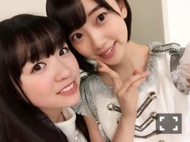

2016/0124Sun蕎麦
こんばんは♩
金曜ロードショーの魔女宅見ましたか〜？
私は見ながら台詞を
ブツブツ言っていました笑
落ち着くしワクワクするし
勇気付けられるし私にとって
大切な作品です
「落ち込んだりもしたけれど
私は元気です」
「そんなに形にこだわらないの。
大切なのは心よ」
っていう言葉が特にお気に入り！
キキの悩みながらも目の前の事に
真剣に取り組むまっすぐな姿勢と勇気に
いつも私も頑張らなきゃって
奮い立たせられます☆
パーカーのフードって被ると
視野が狭まって見えにくくなるから
不安になるんです...
でも落ち着くしあったかいし好き( ᵕ̤ૢᴗᵕ̤ૢ )
髪、少し切りました！軽いです
ほわほわほわ
もう少し伸びないかなー
ここ最近は唇が乾燥してしまいます...
薬用リップは必ずポケットに忍ばせる。
ポケットが無かったら目の届く所に置く。
潤い大切〜(｡･ω･｡)
珍しく最近は
ドラマにはまっていて
乃木坂に入ってからあまりドラマを
しっかり見れなかったのですが
わたしを離さないで
怪盗山猫
いつかこの恋を思い出してきっと泣いてしまう
を毎週欠かさず見ています！
内容も出演者さんも素敵で涙なしでは
見られない話からドキドキしながら
見るものまで沢山。
特に月9の主題歌、手嶌葵さんの
明日への手紙は毎日聴いています✨
上京する時に今までお母さんから
貰った手紙を読み返していて
泣いたのを思い出しました。
私が中学校でいじめられていた時も
励ましてくれたのは家族でした。
誰かがこんな私を見守ってくれていて
どこかで支えていてくれるって
思うと心強いなぁ...
1人じゃないって幸せな事>_<
いつも傍にいてくださって
ありがとうございます。

みり愛とランチしました！
油淋鶏ってやっぱり美味しいな！
みり愛と食べるともっと美味しいー
でも私にとって油淋鶏といえば絢音なの。
色んな思い出が詰まってる
久しぶりに
名古屋飯が食べたいなぁ...(´；ω；｀)
味噌カツも手羽先もきしめんも
ひつまぶしも小倉トーストも。
味噌の濃さが東海地方ならではの
お味！
この間欅坂46の東海地方出身の
平手さんと鈴本さんに
たまたまお会いしてTHE人見知りな
私ですがずっと同郷と聞いていて
お話したかったので勇気を振り絞って
話しかけてみました...
私「と、と、東海地方の...」
お二人「あ！そうです！」
私「あ、やっぱり...！私岐阜県です！」
お二人「そうなんですか！
よろしくお願いします」
私「( ^ω^ )」
緊張したぁ...
笑顔が可愛くて更にドキドキしました。
人見知りは治らないですね。
それからすぐに、コンビニで購入した
福豆を取り出してポリポリ食べました！
1つ食べますか？って聞いても
多分いらないだろうし諦めました
何で福豆しか持ってなかったんだろう...
次からはちゃんとチョコや飴も
持ち歩こう！！
またお話ししたいです♪
ありがとうございました♪
話が逸れましたが
名古屋キャンペーンのたびに深川さんと
色んなご飯を沢山食べたなぁと
思い出しました。
懐かしいなぁ...
思い出は宝物✨✨
先日、深川さんと2人で
撮影をしてきました！
ほのぼの楽しかった〜〜お楽しみにっ
雑誌
沢山の質問ありがとうございました！
次のブログにて
寒いので体調にはお気をつけて。
肌着は重ね着で空気の層を狭くするのが
秘訣です。
おやすみおな(ﾉ)・ω・(ヾ)
2016/01/24 20:36
コメント(1006)
お疲れさまです。
インフルエンザの予防法で実践していることありますか??受験生なので、体調管理しっかりしなくちゃ。
インフルエンザの予防法で実践していることありますか??受験生なので、体調管理しっかりしなくちゃ。
未央奈こんばんわー(^-^)/
過去に嫌なことあったんだね。これからは前だけ向いていこう！
過去に嫌なことあったんだね。これからは前だけ向いていこう！
ブログ更新ありがと～
未央奈の個握とったよ！
未央奈行くの初めてなんだけどどんな事を話したらいいのかな？
個握自体初めてで全握しか行ったことないから時間が長くなると何話したらいいのか分からないんだよね～
でも未央奈に会いたかったからとれて嬉しい！
未央奈も体調に気を付けてねー
おやすみ～
未央奈の個握とったよ！
未央奈行くの初めてなんだけどどんな事を話したらいいのかな？
個握自体初めてで全握しか行ったことないから時間が長くなると何話したらいいのか分からないんだよね～
でも未央奈に会いたかったからとれて嬉しい！
未央奈も体調に気を付けてねー
おやすみ～
こんばんは^^ミオナ♪
以前に､
ここで"魔女宅クイズ"を出した
"第三新東京市NERV本部"です^^
>金曜ロードショーの魔女宅見ましたか〜？
懐かしさのあまり､
内容の再確認をするために～
三回リピートしてみたよ♪
やはり､出来が凄く素晴らしい
"魔女からの贈り物"は､
ミオナに全て届いたかな^^？
100回以上､
魔女宅みてるミオナには
かないませんね^^;
今夜も乃木中あるから～
オレも元気です^^♪
私もドラマ好きです
学校の背景の写真は、本当にムードのある写真だね。
.
.
.
この週末中乃木坂46のMV集を鑑賞した。
現実的で冷静なこのごろ世の中を生きながら、
たまには豊かな想像力を表現したり、会いたい時があります。
アニメやドラマが
そのような想像力の欠如の生活に癒しをくれると思います。
もちろん、
音楽や歌も、私たちの生活の中で最も重要な要素だと思います。
.
.
.
あ！
新年1月の最後の週の月曜日ですね。
幸せな想像力を十分に発揮して、
再度、頑張って 楽しく〜 気持ちよく〜
みおな♪を虐める奴は月に代わってお仕置きよ‼‼‼ 取り敢えずコチョコチョだな♪
みおなちゃんもあったかくして外にでたり、お仕事頑張ってください！
未央奈こんばんわ～☆
魔女宅みれなかったよ～(>_<)
だけど、、いいよね～
あの世界とても好きです♪
パーカーフードかぶると暖かくて良い♪(￣ー￣)
みり愛とランチいいね！
ツーショット素敵☆
雑誌チェックしなければっっ----(>_<)
おやすみおな～☆
ss
魔女宅みれなかったよ～(>_<)
だけど、、いいよね～
あの世界とても好きです♪
パーカーフードかぶると暖かくて良い♪(￣ー￣)
みり愛とランチいいね！
ツーショット素敵☆
雑誌チェックしなければっっ----(>_<)
おやすみおな～☆
ss
みおな！！
受験まであと二週間です、、、恐
で！も！
6月のパシフィコの個握が当たったからそれを励みにラストスパートがんばるね*\(^o^)/*♡
これから大学生になってバイトしてお金たくさん持てるようになったらみおなにたくさん会うね（≧∇≦）
みおなは透明感があって女性として憧れてます！！
これからも推し続けます！母も推してるよ〜
受験まであと二週間です、、、恐
で！も！
6月のパシフィコの個握が当たったからそれを励みにラストスパートがんばるね*\(^o^)/*♡
これから大学生になってバイトしてお金たくさん持てるようになったらみおなにたくさん会うね（≧∇≦）
みおなは透明感があって女性として憧れてます！！
これからも推し続けます！母も推してるよ〜
みおな〰
こんばんは！
髪切ったんだね！めっちゃいい♪( ´θ｀)ノ
魔女の宅急便見たことない！今度絶対見るね。
寒いから風邪ひかないでね、おやすみ〜♪
髪切ったんだね！めっちゃいい♪( ´θ｀)ノ
魔女の宅急便見たことない！今度絶対見るね。
寒いから風邪ひかないでね、おやすみ〜♪
乃木のの聴いたよ〜堀北コンビすごい面白かった(・ω・)ノ♡
魔女宅見たよ〜！みおながすごいキキに似ててずっとみおなにしかみえなかった（笑）
パーカーすごい似合ってて可愛い( ᵕ_ᵕ̩̩ )♡♡
いつ恋めっちゃいいよね！！私も手紙のところで泣いちゃって恋愛のことだけじゃなくてなんかいいなって思った！
みおなも体調に気をつけてね！！
おやすみおな(・ω・)ノ
魔女宅見たよ〜！みおながすごいキキに似ててずっとみおなにしかみえなかった（笑）
パーカーすごい似合ってて可愛い( ᵕ_ᵕ̩̩ )♡♡
いつ恋めっちゃいいよね！！私も手紙のところで泣いちゃって恋愛のことだけじゃなくてなんかいいなって思った！
みおなも体調に気をつけてね！！
おやすみおな(・ω・)ノ
みおなちゃん♪
パーカーのフードの気持ち、
わかる〜！！！
魔女の宅急便、わたしも見たよ！
いい話だよね〜(=^ェ^=)
では！(^o^)/
パーカーのフードの気持ち、
わかる〜！！！
魔女の宅急便、わたしも見たよ！
いい話だよね〜(=^ェ^=)
では！(^o^)/
やっぱり！ 絶対魔女の宅急便見てると思ったよ〜ヾ(＠⌒ー⌒＠)ノ やっぱりジブリ映画って何回見ても飽きないよね！
みおなー( ´ ▽ ` )ﾉ
乃木のの後で聞くね！！
未央奈ちゃん可愛い～(≧∇≦)未央奈ちゃん隣で魔女宅一緒に見て未央奈ちゃんがブツブツ言ってる未央奈ちゃん見ていたい(≧▽≦)
初コメントしました♪
未央奈ちゃん推しです！
いつも、未央奈ちゃんからいっぱい元気をもらっています！！
これからも頑張ってください！！♡大好き♡
未央奈ちゃん推しです！
いつも、未央奈ちゃんからいっぱい元気をもらっています！！
これからも頑張ってください！！♡大好き♡
魔女宅見たことないの～（つд；*)
だからざっとでいいから話を教えてほしいです…
ポピパッパパー！！！
きっと読んでもらえないと思うけど
少し期待してみる…(*/ω＼*)
だからざっとでいいから話を教えてほしいです…
ポピパッパパー！！！
きっと読んでもらえないと思うけど
少し期待してみる…(*/ω＼*)
未央奈！
雪すごいね！岐阜はけっこう積もるんかな？
未央奈の運転見てみたいな～
雪すごいね！岐阜はけっこう積もるんかな？
未央奈の運転見てみたいな～
乃木のの、聴きました。
きぃちゃんと2人で話している時のみおちゃん、
とてもリラックスしていて
少しだけ幼い子になってる気がしましたが
そこが、可愛かったです(^^)笑
2人の乃木ののは、おもしろポイントが満載でしたね。
免許に一人称にお便りコーナーで引く時の擬音。
楽しかったです(^^)
気のせいでしょうか。
まいまいとの思い出が
ご飯の内容しか書かれてない…？
みおちゃんの寒さ対策の秘訣を行い
工事中に備えます。
とりゃぁぁぁぁぁあああ。
きぃちゃんと2人で話している時のみおちゃん、
とてもリラックスしていて
少しだけ幼い子になってる気がしましたが
そこが、可愛かったです(^^)笑
2人の乃木ののは、おもしろポイントが満載でしたね。
免許に一人称にお便りコーナーで引く時の擬音。
楽しかったです(^^)
気のせいでしょうか。
まいまいとの思い出が
ご飯の内容しか書かれてない…？
みおちゃんの寒さ対策の秘訣を行い
工事中に備えます。
とりゃぁぁぁぁぁあああ。
堀ちゃんお疲れ！
イッキだよ！
風邪引いて観れなかったo(T□T)o
イッキだよ！
風邪引いて観れなかったo(T□T)o
魔女の宅急便見てるときね、未央奈絶対見てるだろーな！とかモノマネやってた最初のとこ未央奈と照らし合わせて聞いてたよん！♪♪
好きになった！♡
私もドラマ見てる！
同じ〜！
未央奈がいじめられてたとは知らなかった泣(´Д` )
つらい過去があったんだね。。。
好きになった！♡
私もドラマ見てる！
同じ〜！
未央奈がいじめられてたとは知らなかった泣(´Д` )
つらい過去があったんだね。。。
みおなこんばんわ！
ブログ更新ありがとう！
今日映画見てきた！
orangeと信長協奏曲！
すごい楽しかった（^-^）
orangeは何回も泣いた泣
信長協奏曲はすごい人気で満席だった！早めに取っといて良かった（^-^）最初から最後までドキドキして楽しかった！
ぜひ見てみてね！
写真かわいい（^-^）
すごい癒される♪
自分はフードかぶると落ち着く派（^-^）
自分ひとりの世界に入れて安心する
考え事するときとかはよくやる
家族って大切だね
自分も高1で寮に入ってすごい実感した
自分もよく手紙読み返すからすごい気持ち分かる
お互い頑張ろう！
平手ちゃんと鈴本ちゃん仲いいよね（^-^）
ブログでも二人のツーショットばかり笑
ずっと支えあえる絆を作ってほしいね！
まいまいと撮影したんだ（^-^）
見るのたのしみ～（^-^）
告知、チェックしとくね！
体調には気をつけて！
応援してるよ！
おやすみzzz
のりりまるより
ブログ更新ありがとう！
今日映画見てきた！
orangeと信長協奏曲！
すごい楽しかった（^-^）
orangeは何回も泣いた泣
信長協奏曲はすごい人気で満席だった！早めに取っといて良かった（^-^）最初から最後までドキドキして楽しかった！
ぜひ見てみてね！
写真かわいい（^-^）
すごい癒される♪
自分はフードかぶると落ち着く派（^-^）
自分ひとりの世界に入れて安心する
考え事するときとかはよくやる
家族って大切だね
自分も高1で寮に入ってすごい実感した
自分もよく手紙読み返すからすごい気持ち分かる
お互い頑張ろう！
平手ちゃんと鈴本ちゃん仲いいよね（^-^）
ブログでも二人のツーショットばかり笑
ずっと支えあえる絆を作ってほしいね！
まいまいと撮影したんだ（^-^）
見るのたのしみ～（^-^）
告知、チェックしとくね！
体調には気をつけて！
応援してるよ！
おやすみzzz
のりりまるより
魔女宅はこの前の金曜ロードショーで初めて見た！！
だから、前に未央奈がキキのセリフを真似して行ってた時もよく分からなかったんだけど結構似てたなって思ったよ〜(OvO)
1年前の生誕祭の時に魔女宅風のブースにキキのコスプレした未央奈を思い出して、結構再現率高くて凄いなーと今更驚きました！
そのことを思い出して、ずっとグーチョキパンの場面は未央奈の生誕祭の時の写真と見比べてました笑
だから、前に未央奈がキキのセリフを真似して行ってた時もよく分からなかったんだけど結構似てたなって思ったよ〜(OvO)
1年前の生誕祭の時に魔女宅風のブースにキキのコスプレした未央奈を思い出して、結構再現率高くて凄いなーと今更驚きました！
そのことを思い出して、ずっとグーチョキパンの場面は未央奈の生誕祭の時の写真と見比べてました笑
みおな〰
可愛い～
未央奈ちゃんっ！
ブログ更新ありがとうございます︎︎︎︎☺︎♡
未央奈ちゃん最近少し元気ないみたいで…心配です…
わたしの勘違いだったらごめんなさい(´･ ･`)
最近寒いので、お体に気を付けてください⛄️
未央奈ちゃん大大大好きですっ︎︎︎︎(∩´∀`∩)❤︎
ブログ更新ありがとうございます︎︎︎︎☺︎♡
未央奈ちゃん最近少し元気ないみたいで…心配です…
わたしの勘違いだったらごめんなさい(´･ ･`)
最近寒いので、お体に気を付けてください⛄️
未央奈ちゃん大大大好きですっ︎︎︎︎(∩´∀`∩)❤︎
乃木坂の「の」ききました！
すごくよかったです
すごくよかったです
ブログ更新ありがとう！
魔女の宅急便見てないです！(笑)
ベマーズ見てました(笑)
この時期リップは必需品!!
ポケットに必ず居ます(笑)
ではおやすみおな(^_^ゞ
こんばんは 未央奈ちゃん一二三へ（；*^^)」ｷｬｯﾎｲ
などと実は言っている場合ではなくなってしまいました。パソコンの危機というかインターネットの危機状態です。インターネットやサイトは開きにくいわ、動作はめちゃくちゃ遅いわで困っています。(Ｔ̯Ｔ*)ｶﾅｼｰ これを書いているのもやっとです。
明日もっとよく調べてみないとです。(̯̌̌*)ﾝｰｺﾏｯﾀ
怪盗山猫見ています。原作があるからストーリーもしっかりしていてそうですね。Ｌ(^^Ｌ)
今泉ゆいちゃんならばもっと話しやすかったかもね。なにせ唯一未央奈ちゃんを上げてくれた子だから。
まいまいとの撮影良かったですね。なるべく多く思い出作ってもらえれば。ところでベマーズ２あった場合どうなるのでしょう？(°°ゞﾊﾃﾅ？ 「かあちゃん」がいないじゃないか!!∑(＞＜*
ではではまたコメントします。コメ落ちしないように。人①_①*)
などと実は言っている場合ではなくなってしまいました。パソコンの危機というかインターネットの危機状態です。インターネットやサイトは開きにくいわ、動作はめちゃくちゃ遅いわで困っています。(Ｔ̯Ｔ*)ｶﾅｼｰ これを書いているのもやっとです。
明日もっとよく調べてみないとです。(̯̌̌*)ﾝｰｺﾏｯﾀ
怪盗山猫見ています。原作があるからストーリーもしっかりしていてそうですね。Ｌ(^^Ｌ)
今泉ゆいちゃんならばもっと話しやすかったかもね。なにせ唯一未央奈ちゃんを上げてくれた子だから。
まいまいとの撮影良かったですね。なるべく多く思い出作ってもらえれば。ところでベマーズ２あった場合どうなるのでしょう？(°°ゞﾊﾃﾅ？ 「かあちゃん」がいないじゃないか!!∑(＞＜*
ではではまたコメントします。コメ落ちしないように。人①_①*)
みおなだいすき！です！☆*:.｡. o(≧▽≦)o .｡.:*☆
個握行きたいな！
個握行きたいな！
こんばんわ〜
乃木のの聞いたで‼︎
途中の声めっちゃかわいかったわ笑笑
車の免許は塩アイス3人でとって、3人でドライブとかいいと思う(^O^)
自分も免許取りたて3人組みで旅行して楽しかったよ〜
ここ最近かなり寒いから体調に気をつけてな〜
乃木のの聞いたで‼︎
途中の声めっちゃかわいかったわ笑笑
車の免許は塩アイス3人でとって、3人でドライブとかいいと思う(^O^)
自分も免許取りたて3人組みで旅行して楽しかったよ〜
ここ最近かなり寒いから体調に気をつけてな〜
僕も今日、髪を切ってきました(^-^)/
頭が寒いです((+_+))
それにしても、僕も久しぶりに名古屋飯が食べたくなってきました♪
すがきやのラーメンも食べたいです！
お互いに、体調管理万全にp(^-^)q
頭が寒いです((+_+))
それにしても、僕も久しぶりに名古屋飯が食べたくなってきました♪
すがきやのラーメンも食べたいです！
お互いに、体調管理万全にp(^-^)q
みおな
魔女宅何度見てもおもしろいよな
最高だぜ
パーカーいいね
みおなかわいいよ
「魔女の宅急便」録画したけど
まだ見てない。
明後日休みだから明日見る。
先週の「天空の城ラピュタ」は見たよ。
改めて見て気が付いた。海賊のおばちゃん三つ編みなのが
変。。。じゃないのが上手く表現してるなぁ。。。
おばあちゃんになりました。
三つ編みとツインテールどちらかを選んでやってください。
と言われたらどっち？
乃木のの聴いたよ。
面白かった。
算数の先生ってお菓子くれたの？
学校の先生？
いいな。。。
では、(=ﾟωﾟ)ﾉね。
まだ見てない。
明後日休みだから明日見る。
先週の「天空の城ラピュタ」は見たよ。
改めて見て気が付いた。海賊のおばちゃん三つ編みなのが
変。。。じゃないのが上手く表現してるなぁ。。。
おばあちゃんになりました。
三つ編みとツインテールどちらかを選んでやってください。
と言われたらどっち？
乃木のの聴いたよ。
面白かった。
算数の先生ってお菓子くれたの？
学校の先生？
いいな。。。
では、(=ﾟωﾟ)ﾉね。
未央奈〜！ブログ更新ありがとう〜！
魔女の宅急便、おれもけっこうセリフ言えるよー！
言い合いしたいわ！笑笑笑
また、ブログの更新待ってるよ！
魔女の宅急便、おれもけっこうセリフ言えるよー！
言い合いしたいわ！笑笑笑
また、ブログの更新待ってるよ！
こんばんわ！
パーカーかぶってるとあったかいよね！！
風邪ひかないように気をつけて！
応援してます！！！！
パーカーかぶってるとあったかいよね！！
風邪ひかないように気をつけて！
応援してます！！！！
あー！！
魔女の宅急便撮ってるの忘れてました。。
また来週の休みにとっておくことになってしまう。。
俺も最近そばにいてくれる人が、自分を必要としてくれる人が、自分を愛してくれる人が絶対いるんだってことをふと考えています。
もし、自分は1人なんや、とか、自分を愛してくれる人や必要としてくれる人はおらんのやって思ってる人がいたら、気づいてくれるかわからないけど、微力にしかなれないかもしれないけど、その人の味方になりたいって心から思うようになりました。
それもこれも、乃木坂46の歌や存在や未央奈さんが発信する言葉から影響されたのもあると思います。
この世に1人っきりの人なんていないと思います。
きっと味方でいてくれる人がいて、俺が率先して味方になりたいって思います。
こんなふうに思わしてくれる乃木坂46の歌や未央奈さんが僕は大好きで、ずっとずっと応援してます。
魔女の宅急便撮ってるの忘れてました。。
また来週の休みにとっておくことになってしまう。。
俺も最近そばにいてくれる人が、自分を必要としてくれる人が、自分を愛してくれる人が絶対いるんだってことをふと考えています。
もし、自分は1人なんや、とか、自分を愛してくれる人や必要としてくれる人はおらんのやって思ってる人がいたら、気づいてくれるかわからないけど、微力にしかなれないかもしれないけど、その人の味方になりたいって心から思うようになりました。
それもこれも、乃木坂46の歌や存在や未央奈さんが発信する言葉から影響されたのもあると思います。
この世に1人っきりの人なんていないと思います。
きっと味方でいてくれる人がいて、俺が率先して味方になりたいって思います。
こんなふうに思わしてくれる乃木坂46の歌や未央奈さんが僕は大好きで、ずっとずっと応援してます。
未央奈おはようございます、こんにちは、こんばんわ

油淋鶏食べたんだ
中国料理の話題久しぶりだねー
油淋鶏僕も好きです
大食いシスターズ元気そうでなにより
欅坂46平手さんとお会いしたんですね

僕もあるイベントで平手さんと握手しました
僕より年下にもかかわらず、年齢とは思えないくらいしっかりされた、素晴らしい方ですよね
握手会では１人１人のお客様に言葉を掛け、とても丁寧に応対されていたのが印象的でした
アイドルという職業を目指す人、勝ち抜いてデビューできた人の初舞台、フレッシュなオーラというものを肌で感じた瞬間でした
乃木坂の立ち上がりのときは僕が今よりも子供で、それに気付けませんでした…
今思うと本当にもったいなかったです
未央奈は当然オーラが半端なくあります
バレッタの握手会以前に、最初の個人PVの時点で演技が上手くてなんて素敵なんだろうと思った
お芝居にもたくさん出て、未央奈が演技派女優になる姿を観たくて仕方ない今日この頃です
堀北コンビの乃木のの、未央奈が素に近い感じだったのかな
堀北ならでは漫才みたいなトークにお腹を抱えて大笑いしました
こんなにお腹を抱えて大笑いしたのは久しぶり
未央奈も言ってたけど、乃木ののが３人体勢に戻っとしたら、ぜひぜひ未央奈にMCやってほしいなー
僕も月９観てトラックの中でお母さんからの手紙を読むシーンでボロ泣きしそうになりました
「明日への手紙」の歌詞を思い出すと頭の中で泣きそうになる
未央奈の半目好きかも
たいめし。
油淋鶏食べたんだ
中国料理の話題久しぶりだねー
油淋鶏僕も好きです
大食いシスターズ元気そうでなにより
欅坂46平手さんとお会いしたんですね
僕もあるイベントで平手さんと握手しました
僕より年下にもかかわらず、年齢とは思えないくらいしっかりされた、素晴らしい方ですよね
握手会では１人１人のお客様に言葉を掛け、とても丁寧に応対されていたのが印象的でした
アイドルという職業を目指す人、勝ち抜いてデビューできた人の初舞台、フレッシュなオーラというものを肌で感じた瞬間でした
乃木坂の立ち上がりのときは僕が今よりも子供で、それに気付けませんでした…
今思うと本当にもったいなかったです
未央奈は当然オーラが半端なくあります
バレッタの握手会以前に、最初の個人PVの時点で演技が上手くてなんて素敵なんだろうと思った
お芝居にもたくさん出て、未央奈が演技派女優になる姿を観たくて仕方ない今日この頃です
堀北コンビの乃木のの、未央奈が素に近い感じだったのかな
堀北ならでは漫才みたいなトークにお腹を抱えて大笑いしました
こんなにお腹を抱えて大笑いしたのは久しぶり
未央奈も言ってたけど、乃木ののが３人体勢に戻っとしたら、ぜひぜひ未央奈にMCやってほしいなー
僕も月９観てトラックの中でお母さんからの手紙を読むシーンでボロ泣きしそうになりました
「明日への手紙」の歌詞を思い出すと頭の中で泣きそうになる
未央奈の半目好きかも
たいめし。
魔女の宅急便、おととい初めて見たよ！
テレビで未央奈がマネした冒頭のところ見れて「これか！」って1人心の中で興奮してた笑
いちばん印象に残ってるのが、なぜか「僕明日には白猫になってると思うよ」っていうジジのセリフww
テレビで未央奈がマネした冒頭のところ見れて「これか！」って1人心の中で興奮してた笑
いちばん印象に残ってるのが、なぜか「僕明日には白猫になってると思うよ」っていうジジのセリフww
どんな時もひとりじゃないってことを忘れないでね♪
欅坂のみんな共仲良くね！
欅坂のみんな共仲良くね！
パーカー未央奈可愛すぎる♡(´,,•ω•,,`)
髪の毛すいたんだね！爽やか！
魔女の宅急便録っとけばよかった〜
みたかったな、、、
未央奈の声優verでみたい！！！！（笑）
キキの言葉、素敵な名言だね～！
堀北コンビの乃木ののききたかったな～。
全国放送にしてほしい切実に…。
平手ちゃんと鈴本ちゃんにあったんだね！
未央奈、人見知りなんだぁ可愛い(。-∀-)にやぁ
ほのぼの人見知り未央奈も大好きです！！！！
 あじゅどん
あじゅどん
髪の毛すいたんだね！爽やか！
魔女の宅急便録っとけばよかった〜
みたかったな、、、
未央奈の声優verでみたい！！！！（笑）
キキの言葉、素敵な名言だね～！
堀北コンビの乃木ののききたかったな～。
全国放送にしてほしい切実に…。
平手ちゃんと鈴本ちゃんにあったんだね！
未央奈、人見知りなんだぁ可愛い(。-∀-)にやぁ
ほのぼの人見知り未央奈も大好きです！！！！
未央奈〜ブログ更新ありがとう！
髪の毛切ったんだね〜可愛いな〜
乃木ののも聴いたよ！すごく面白かった！
やっぱり、堀北コンビは仲良しだね〜
これから乃木中も観るよ！楽しみだな〜
寒いから体調崩さないようにね。
それじゃ おやすみおな〜
髪の毛切ったんだね〜可愛いな〜
乃木ののも聴いたよ！すごく面白かった！
やっぱり、堀北コンビは仲良しだね〜
これから乃木中も観るよ！楽しみだな〜
寒いから体調崩さないようにね。
それじゃ おやすみおな〜
未央奈お疲れ様！
未央奈人見知りだったのか！笑
俺も人見知りで話しかけるの苦手だ。笑
未央奈人見知りだったのか！笑
俺も人見知りで話しかけるの苦手だ。笑
おはこんばんは☆*:.｡. o(≧▽≦)o .｡.:*☆
みーに質問します(*^_^*)
筋トレしてる男性は好きですか？
好きな男性の筋肉はどこですか？
ゴリマチョと細マッチョどっちが好きですか？
みーに質問します(*^_^*)
筋トレしてる男性は好きですか？
好きな男性の筋肉はどこですか？
ゴリマチョと細マッチョどっちが好きですか？
質問したから是非返して欲しいな！
最近は本当に寒いね。体調に気をつけて頑張ってください！！
最近は本当に寒いね。体調に気をつけて頑張ってください！！
みおなー(*´・ω・)ﾉこんばんわぁ
乃木ののとても良かったです٩(ˊωˋ*)و勉強頑張ってました
僕はイジメにあったことはほんの少しの時期だけあったんですが自分の態度みたいなのを見つめ直して改めたら自然と無くなっていきました。女子の間のイジメはとてもキツイのはよく知ってます。今の自分はとても弱く少しでもそんなことあったら多分今では学校行かなくなると思います。大学入ってまず不安に思うのは仲間作りです^^;自分から話しかけたり行ける人ってすごく尊敬するんです。。。
乃木ののとても良かったです٩(ˊωˋ*)و勉強頑張ってました
僕はイジメにあったことはほんの少しの時期だけあったんですが自分の態度みたいなのを見つめ直して改めたら自然と無くなっていきました。女子の間のイジメはとてもキツイのはよく知ってます。今の自分はとても弱く少しでもそんなことあったら多分今では学校行かなくなると思います。大学入ってまず不安に思うのは仲間作りです^^;自分から話しかけたり行ける人ってすごく尊敬するんです。。。
未央奈(o^^o)
名古屋飯たべてみたいです^_^
名古屋飯たべてみたいです^_^


更新ありがとうヾ(＠⌒ー⌒＠)ノ
魔女宅見たよ〜＼(^o^)／
何回見ても色褪せなくて素敵な映画だよね〜(=´∀｀)人(´∀｀=)
みおなちゃんも今頃見てるのかな〜って思いながら見てた笑
写真ありがとう＼(^o^)／
髪少し切ったんだね
可愛です
欅坂46のメンバーさん方とお話し出来たんだね♪(´ε｀ )
仲良くなれると良いですね＼(^o^)／
秘訣ありがとうヾ(＠⌒ー⌒＠)ノ
寒い日々が続くので体調に気を付けてね〜